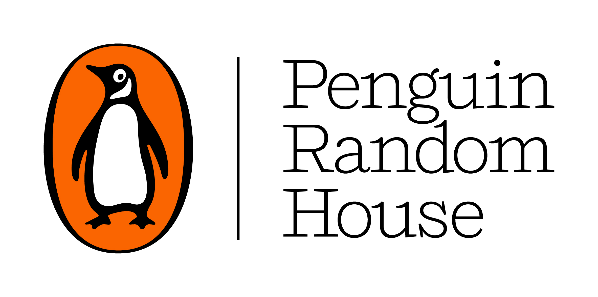
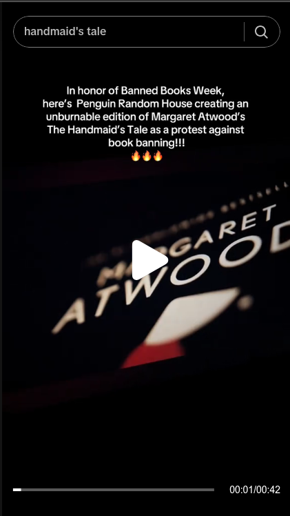

Mock-Up Campaign #1
Au Naturale: Instagram

In this opportunity, I present a sample of Instagram posts for a mock-up campaign for an ethical make-up label, Au Naturale Cosmetics.
Which is the branding of Au Naturale?
Au Naturale Cosmetics establishes itself not only as a healthier and more natural alternative among the industry, but also a voice that advocates for more transparency and ethical production processes. It's funder, Ashley Prange was a nuclear analyst in Washington D.C. who left her previous job seeking to revolutionarize the beauty industry by putting ethical means at the center, which included establishing partnerships with fair-trade farmers worldwide, avoiding animal cruelty, and only using organic, paraben-free ingredients.
In this sense, Au Naturale spouses a Clean Make-Up label, a commitment toward only using non-toxic and sustainable components for its products, which positions it in the same group like 100 Percent Pure, Tower 28, Merit Beauty or ILIA. Therefore, it wouldn't be surprising for Au Naturale to follow certain aesthetics and imaginary when engaging with its audience. Both its official website and IG profile are characterized by minimalism and "clean" arragements that often includes elements like flowers or minerals to emphasize the organic content of their products.
Au Naturale also tends to present more "real-looking" models, which is a tactic adopted by more alternative beauty brands or beauty brands that want to be more approachable. After all, a political undertone in accompanying a branding would require certain consistency, and in this case, this extends to not focusing on idealized and unreachable beauty standards for women.
What else can Au Naturale do in their social media?
And yet, there are a few notable differences in the content posted by bigger brands like 100 Percent Pure and ILIA in platforms like IG. For starters, a higher quality of image and video is noticeable among the bigger brands, making the content look much more professional, with the content being more curated in terms of definition and lighting. But beyond that, while Au Naturale does try to replicate this clean and natural aesthetic, the pieces aren't as elaborated in their arragement, and something there isn't even a clear focus.
Mock-Up Idea: LATAM Market
Au Naturale Cosmetics is mostly an US-based brand, but I consider this a good opportunity to picture a mock-up campaign for promoting the brand in the LATAM market, considering that the brand is already committed with thinking about fair trade with partners from the developing world and how LATAM is a very important region for the with its beauty market posting +13% growth in the first half of 2025, while other statistics say that the Latin America cosmetics market generated a revenue of USD 22.4 million in 2025.

Source: reynaaaa.ts on TikTok
On October 6, 2025, a user named reynaaaa.ts uploaded a camera recording of the promotional video for Margaret Atwood's The Handmaid's Tale 'Unburnable' edition. While the original stunt was released in 2022, this UGC reached over 90K likes, proving sustained interest.
It isn't surprising how this video attracted considerable attention. After all, the cinematic recording is of very high quality, using high light contrast to focus the attention on both the book cover and Margaret Atwood's face. Importantly, this is a special edition of a critically acclaimed book that had already transcended the domain of literary club conversation to become a well-known metaphor, symbol, or warning for social issues like abortion rights.
Observation: This post represented a high level of engagement; however, there wasn't any clear path toward conversion harnessed by PRH.
Proposal:
- The marketing team of Penguin Random House could have created a path toward engagement and conversion by adding a comment (CTA) asking the users to tag a library that required a copy of the 'Unburnable' The Handmaid's Tale edition.
- Penguin Random House could have created a path toward greater awareness and engagement by answering a comment asking for an 'Unburnable' edition of Fahrenheit 451.
- A path toward greater conversion could have been created by adding a CTA telling the users to look for a book copy on their official digital shop.
Simon & Schuster Comparison: Robin Wall Kimmerer's Captivating Speech
On October 5, 2025, Penguin Random House uploaded to TikTok a carousel with quotes by different personalities from the publishing house and renowned authors that addressed the topic of book bans as a tribute for Banned Books Week. The carousel included quotes by Percival Everett, Ibram X. Kendi, and Nikole Hannah-Jones, among others. This post gathered over 14K views, 1569 likes, and around 41 shares.
- Observation: This post, aside from not achieving much engagement for a page with over 100K followers (likes corresponded to around 0.01% of the total follower count), didn't include any clear CTA or conversion path.
Another post for the Banned Books Week was uploaded on October 6. In this post, PRH focused on promoting a contest in which the winner would be awarded 30 banned books. This post gathered a bit over 2300 views, 182 likes, and 15 comments.
- Observation: While the post included a strong CTA consisting of tagging 2 friends and following a few rules indicated in a link added to the description. The post aimed to increase engagement; however, the outcome wasn't as positive, considering that only 15 comments were gathered.
How did Simon & Schuster perform instead?
A good example for comparison for a more engaging post on TikTok during Banned Books Week is the one given by Penguin Random House's rival, Simon & Schuster. On October 6, 2025, Simon & Schuster uploaded a video in which Robin Wall Kimmerer, author of the books The Serviceberry and Braiding Sweetgrass, gave an emotive message addressing the topic of reading as a human right. This post amassed almost 150K views, over 41K likes, 164 comments, and 470 shares.
Why did this post achieve higher performance on social media KPIs (reach and engagement)?
Simon & Schuster did some things notoriously better. In the first place, the post was a video, and while there is increasing evidence evidence that carousels are outperforming videos in most metrics on TikTok, carousels work better when aesthetic images are used or some casual storytelling by slide is told. In contrast, one of the posts from Penguin Random House consists of a carousel of isolated quotes. But there is more: the Simon & Schuster post doesn't only include a video with a person talking, but also the person's face is at the center of the video. Because people are primed to focus on faces and facial expressions, this was a good choice for the recording. In contrast, the Penguin Random House post with a person talking didn't center nor focus on the person in the same fashion.
Secondly, the thumbnail used is rather thought-provoking and invites the audience to stop the scrolling to think deeply about sensitive matters, since it contains the question "Is reading a human right?" as the sole text from the video. This question is a direct, short invitation to think, so it would have an immediate impact. Furthermore, the person talking is Robin Wall Kimmerer, an award-winning author known for provocative ideas like rethinking our economy in favor of a gift economy and our relationship with the Earth, who is regarded as an indigenous scientist. Hence, the person at the forefront of the video has authorial credibility while addressing human rights and social justice issues and would be a familiar face for the people that share the same preoccupations.
Moreover, Robin Wall Kimmerer isn't a guest; she published The Serviceberry under the Scribner imprint within Simon & Schuster, which is dedicated to award-winning authors. In this way, Simon & Schuster isn't just giving a platform for hearing the voices of provocative and politically informed people but shows the authenticity of its commitment by including voices that have published under their house. At the same time, this video serves to subtly promote the book published by the author under its house.
Simon & Schuster also recognized the importance of connecting with the audience and using storytelling that focuses on human experience. In the video, Kimmerer narrated one anecdote from when she was a fifth-grader and brought home a book from the school library that resulted in the librarian calling her parents to tell them that the book she took was too "old" for her (probably meaning that it was too mature for her age), and how her parents stood up for her. This personal story helps the viewer feel closer to the author and realize how the things discussed have implications in real life.
Finally, an apparently small detail in the video description that could have helped the post reach more viewers—the hashtags used. As was commented before, #BookTok is a powerful subcommunity that can easily tilt the odds in the publishing industry, and neither of the Penguin Random House posts contained this hashtag. #BookTok is majorly composed of Gen Z girls. Across many cohorts, women have been the most concerned by social issues. Additionally, Gen Z is consistently characterized as a progressive cohort that is conscious and informed about pressing political matters. Hence, when trying to reach an audience that would be concerned by the escalation of anti-right-of-reading actions, it would make sense to try to reach communities and subcommunities overrepresented by Gen Z girls.
Proposal:
- Penguin Random House should have uploaded a video or carousel with images and text in which a renowned author gave a brief message by telling a short history (like Invisible Child author Andrea Elliott), accompanied by a CTA such as "share your story in the comments" or "share with us and others subtle ways in which we can fight against censorship."
- Another option would have been taking the opportunity to promote a new book (whether fiction or non-fiction) that addresses issues related to discrimination, human rights, censorship, or authoritarianism, something that HarperCollins did by promoting Maria Ressa's book, How to Stand Up to a Dictator. A carousel creatively presenting the themes and background of the book by using metaphors, storytelling, or provocative thought experiments has been ideal due to the higher reach of carousels.
- PRH should have included a #BookTok hashtag to increase its reach among this influential subcommunity.